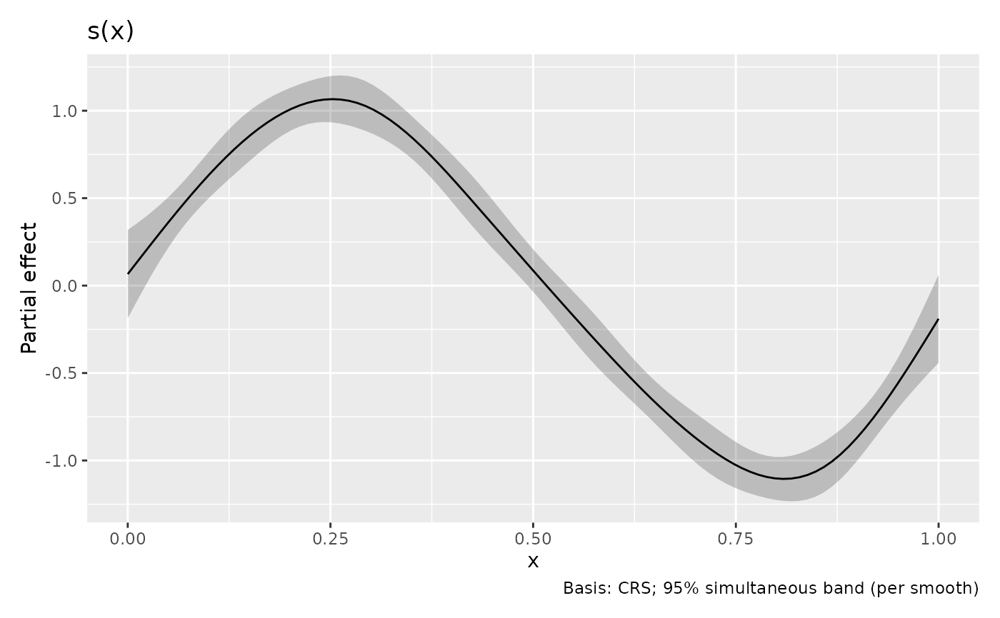

Simultaneous bands on an evaluation grid or a continuous interval
Source:R/simultaneous-bands.R
simultaneous_bands.RdSimulation calibrates Gaussian bands jointly over the returned evaluation points. Tube calibration covers a continuous interval for supported one-dimensional cubic splines, including the space between returned points.
Details
Request interval = "simultaneous" and
simultaneous_method = "tube". The simulation method remains the default.
Tube bands use the same Gaussian coefficient covariance selected by
frequentist and unconditional as simulation. For smooth estimates they
also retain overall_uncertainty. They calibrate separately for each smooth
or factor-level comparison; they do not cover all comparisons jointly.
Let \(d(x)\) be the uncertainty design and \(V\) the coefficient covariance. With \(V=LL^T\), set \(u(x)=L^Td(x)/\sqrt{d(x)^TVd(x)}\). The method integrates \(\kappa=\int_a^b\|u'(x)\|\,dx\) and chooses \(c\) so that $$2\{1-\Phi(c)\}+\kappa\exp(-c^2/2)/\pi=1-\mathrm{level}.$$ This expression bounds the two-sided exceedance probability by counting threshold crossings of the standardized Gaussian process. Repeated paths can make it conservative. Regular components separated by zero variance receive separate endpoint contributions. Polynomial knots divide numerical integration, but do not add endpoint contributions when the process is continuous. Zero-variance and rank-one processes are handled separately.
Under the selected Gaussian approximation, the band has at least the
requested simultaneous probability over the stated interval, subject to
numerical accuracy. Bayesian covariance gives an approximate posterior
interpretation. Frequentist covariance calibrates centered Gaussian sampling
errors; coverage of an unknown fixed curve also depends on smoothing bias.
The unconditional covariance correction retains its existing meaning and
does not integrate the full smoothing-parameter posterior. Numerical
integration error estimates are diagnostics, not certified error bounds.
Supported quantities
Ordinary one-dimensional cubic regression splines ("cr", "cs"),
cubic P-splines ("ps" with their ordinary cubic degree), and ordinary
cubic thin plate bases ("tp", "ts") are supported. Factor-by smooths
define separate curves. Numeric by multipliers must be fixed throughout
each curve. Unconstrained GAMs and their BAM, GAMM, and GAMM4 adapters use
their fitted prediction basis and covariance. Surfaces, constrained models,
shape enforcement, and unsupported bases produce an error; there is no
automatic switch to simulation.
First and second derivative bands retain the requested finite-difference
functional, stencil, and step. The operator is evaluated using integrals
of spline derivatives to avoid subtracting nearly equal basis values.
This can improve floating-point accuracy relative to the simulation path
without changing the mathematical functional. The continuous band refers
to that derivative approximation. Differentiation must be on the smooth
coordinate (wrt = "smooth", or the same coordinate on the covariate scale).
Raw-scale derivatives of transformed terms are not supported by tube
calibration. Difference bands retain the joint covariance of the two
smooths and include group means when requested. The selected parametric
group contributions must be constant along the curve.
Domain and numerical controls
simultaneous_domain accepts two increasing finite endpoints, or a named
list keyed by coordinate. By default it is the range of returned evaluation
coordinates, including gaps. A single evaluation location requires an
explicit interval. All returned points must lie inside the domain, which
must lie inside the fitted spline support; derivative stencils must also
remain inside that support. The domain does not imply that each compared
group has observations throughout it. With a fixed domain, n changes
output density but does not change calibration. Connecting plotted bounds
by straight segments is a rendering approximation to the continuous band.
tube_control accepts rel_tol = 1e-6, abs_tol = 1e-8,
subdivisions = 1000L, and root_tol = 1e-8. Integration is split at
polynomial boundaries and checked for convergence. Failures produce errors.
Simulation controls (n_sim, n_cores/ncores, and seed) are ignored;
tube calibration does not use random numbers. Computation controls require
the fitted model. Drawing saved estimates uses their stored interval limits.
Returned metadata
The interval_info attribute records calibration = "tube",
calculation = "tube_crossing_bound", the Gaussian covariance flags, and
the per-smooth or per-comparison coverage scope. Its curves list contains
identities, coordinates, resolved domains and their sources, critical
values, lengths, regular-component counts, numerical diagnostics, and
derivative stencils and steps where applicable. Methodological details are
not added to plot captions.
References
Sun, J. and Loader, C. R. (1994). Simultaneous confidence bands for linear regression and smoothing. The Annals of Statistics, 22, 1328–1345. doi:10.1214/aos/1176325631 .
Krivobokova, T., Kneib, T. and Claeskens, G. (2010). Simultaneous confidence bands for penalized spline estimators. Journal of the American Statistical Association, 105, 852–863. doi:10.1198/jasa.2010.tm09165 .
Wiesenfarth, M., Krivobokova, T., Klasen, S. and Sperlich, S. (2012). Direct simultaneous inference in additive models and its application to model undernutrition. Journal of the American Statistical Association, 107, 1286–1296.
Liebl, D. and Reimherr, M. (2023). Fast and fair simultaneous confidence bands for functional parameters. Journal of the Royal Statistical Society: Series B, 85, 842–868. doi:10.1093/jrsssb/qkad026 .
Examples
library("mgcv")
set.seed(4)
dat <- data.frame(x = seq(0, 1, length.out = 100))
dat$y <- sin(6 * dat$x) + rnorm(100, sd = 0.2)
model <- gam(y ~ s(x, bs = "cr", k = 8), data = dat, method = "REML")
band <- smooth_estimates(model,
interval = "simultaneous",
simultaneous_method = "tube", simultaneous_domain = c(0, 1)
)
draw(band)

rate <- derivatives(model,
type = "central", interval = "simultaneous",
simultaneous_method = "tube"
)
attr(rate, "interval_info")$curves[[1]]$critical
#> [1] 3.015127